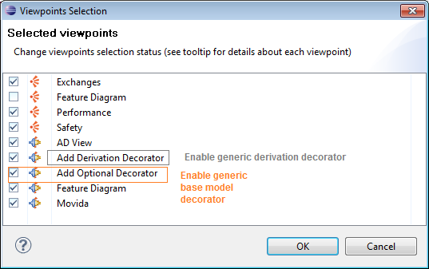
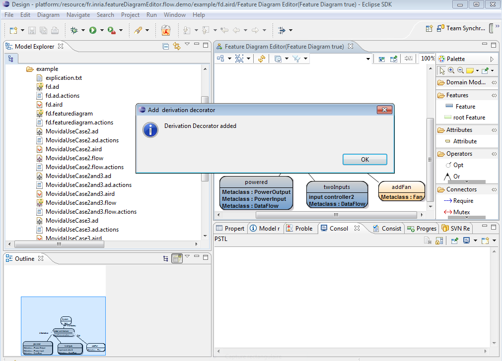

To enable base model and derivation decorator we need to add a specific layer to the base model layer through two popup menus in the feature modeler. However, these popup menus needs to be activated through the following instructions :
Right click on the session fd.aird -> Viewpoints selection. You obtain the following wizard :

In the feature diagram editor modeler click on the layer icon (outlined in the feature diagram editor picture of the section above) and check Add Derivation Decorator and Add Optional Decorator. Then click on the Feature Diagram element (white part of the feature diagram modeler) -> Derivation Decorator -> Add Derivation Decorator and Optional Decorator -> Add Optional Decorator. You obtain the following in your Eclipse :

![[Important]](gfx/admonitions/important.gif) | |
The next sections present how to use these enabled decorators.